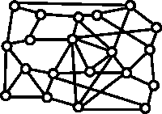
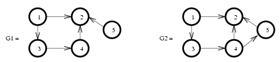

First of all, get the file GraphesTP1.tgz and uncompress it:
tar zxvf GraphesTP1.tgz
rm GraphesTP1.tgz
cd GraphesTP1; ls
This archive contains C programs for manipulating graphs. Documentation of
these programs can be found here:
In an ordinary file, enter the data of an arbitrary graph as follows:
<number_of_vertices> <number_of_arcs> arcs <initial_vertex> <final_vertex> <initial_vertex> <final_vertex> ...
For instance (see the file k5.graph) :
5 10 arcs 0 1 0 2 0 3 0 4 1 2 1 3 1 4 2 3 2 4 3 4
Edit the files exo111.c, exo112.c and read them. Compile the library:
makethen compile these two programs:
make exo111.exe
make exo112.exe
and execute them:
./exo111.exe k5.graph
./exo112.exe k5.graph
The latter program creates a postscript file whose name extends the file name of the given graph (eg here: k5.graph.eps). You can view the PostScript file generated with ghostview, kghostview or display :
display k5.graph.eps
Edit the file exo113.c, read it, compile it, and execute it. Visualize the results for several parameter values.
Before going any further, study the descrption of the data structure used to represent a graph by Γ (its successors map). Also remind to refer to the documentation of the source code, including:
Edit the file exo121.c, read it, compile it, and execute it. Study the function Sym. Why isn't it efficient? What is the time complexity of the algorithm?
Edit the file exo122.c, read it, compile it, and execute it. Note the computation times obtained for various sizes of graphs.
In the file exo122.c, change the function Sym to make the algorithm linear (for any help, see the slides of the first lecture). Find below how to traverse a list of successors:
pcell p;
...
/* for any successor y of x */
for (p = g->gamma[x]; p != NULL; p = p->next)
{
y = p->som;
...
Measure the computation time with the new version and compare.
Imagine a group of seven friends: Rachel, Monica, Ross, Chandler, Janice, Joe, and Phoebe. They live in New York and plan to rent two cars to spend a vacation in Florida. However, spending together the 18 hours that take the trip can be problematic if the passengers of both vehicles are not carefully selected.
In fact, you should know that
Formulate this problem in terms of graphs and give a solution for this particular case.
We say that a graph G = (E, Γ) is bipartite if the set E of its vertices can be partitioned into two subsets E1 and E2 (ie, E1 ∪ E2 = E and E1 ∩ E2 = ∅) such that an arc of G cannot link two vertices of E1, and cannot link two vertices of E2 either. Consider for instance

We see that G1 is a bipartite graph with E1 = {1, 4, 5} and E2 = {2, 3}, and that G2 is not a bipartite graph. We can interpret the bi-partition of the graph vertices into two subsets E1 and E2 as a ``coloring'' of the vertices with two distinct colors (bi-coloring), one color for E1 and the other for E2.
In the following, for simplicity, we assume that G is connected.
Propose a linear time algorithm that indicates whether a given graph G is bipartite or not, and if so, that returns a bi-coloring of G. Getting inspired by the algorithm TRANS studied in course (see slide 21 of the lecture on connectivity) might be a successful idea.
For the implementation of your algorithm you could learn from the implementation of algorithm TRANS and of that of algorithm SCC, found in the file scc.c. It will be probably easier to copy this code and modify it (you have to understand it before that!).
You can use the field v_sommets of the graphe structure to store the colors associated with the vertices, and the function AfficheValeursSommets to display the result in text mode.
To graphically visualize the results of your algorithm, you may refer to the program demo_couleurs.c located in your directory. This program draws a graph whose vertices are named (by a string) and valued (by the field v_sommets). These values, which are integers between 0 and 4, are interpreted as colors (white, black, red, green and blue for 0, 1, 2, 3, 4 respectively). The file demo_couleurs.graph contains an example.
Test your program on several graphs that are bipartite or not, including the one from section `` Friends.''
Prove that a graph is bipartite if and only if it has no cycle of odd length.
Given a non bipartite graph, propose and implement a method to detect and display a cycle of odd length.
We can now imagine two strategies for finding a bipartite graph from a graph that is not: the idea is to detect and remove cycles of odd length, by deleting arcs, or by removing vertices. In our application "friends", the first strategy consists of neglecting one or more animosity relations, the second one is more radical because it excludes friends from the group. Implement one of these two strategies.